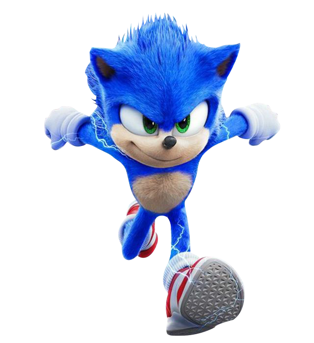
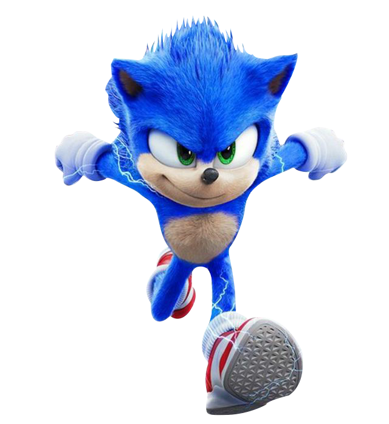
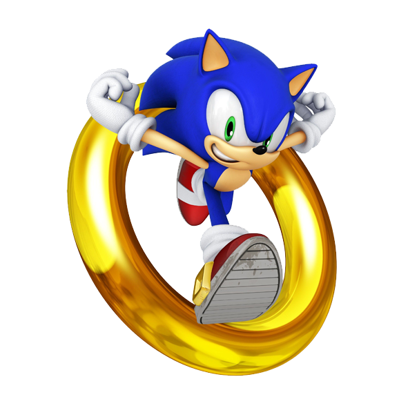

 Sonic the Hedgehog[a] é uma série de jogos e uma franquia multimídia japonesa criada pelo Sonic Team e produzida pela Sega. A franquia segue Sonic, cuja vida pacífica é sempre interrompida pelo antagonista principal da série, Dr. Eggman (nome real : Dr. Ivo Robotnik). Sonic - normalmente junto de um de seus aliados, como Tails e Knuckles - se aventuram para parar o vilão insano e seus planos para dominação mundial. O primeiro jogo da série Sonic, lançado em 1991, foi concebido pela divisão da Sega, Sonic Team após um pedido para um novo mascote. O título foi um sucesso, e foi renovado para várias sequelas, que levaram a Sega a liderança no rumo dos consoles de video-game da era 16-bit do começo até a metade dos anos 90.[1] Atualmente, é uma das franquias mais famosas e mais lucrativas da indústria dos videogames.[2]
Enquanto os primeiros jogos da série eram jogos de plataforma em side-scrolling, posteriormente os jogos da série foram expandidos em vários outros gêneros e sub-séries, como Mario & Sonic at the Olympic Games e a série Sonic Boom. Até 2016, a série vendeu mais de 80 milhões de cópias físicas de jogos,[3] e mais de 350 milhões de unidades quando combinados com relançamentos e downloads para celulares.[4] Fora dos video-games, a franquia também já foi divulgada em outras mídias, incluindo desenhos animados, anime e uma longa série de histórias em quadrinhos, que foi reconhecida como a mais longa história em quadrinhos baseada em um video-game já publicada pelo Guinness World Records.[5]